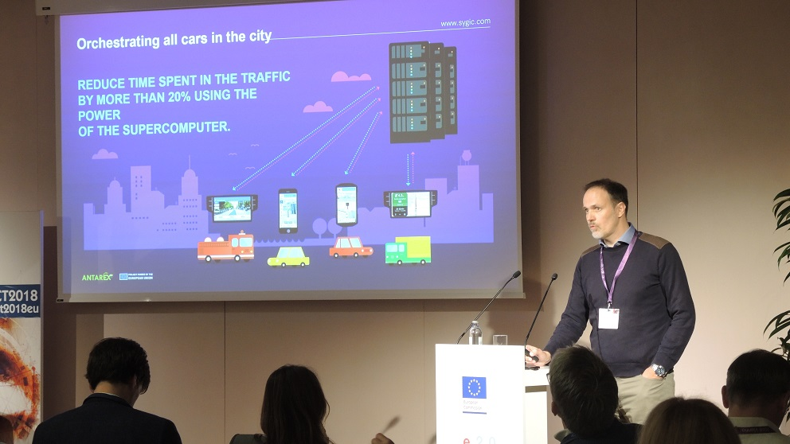
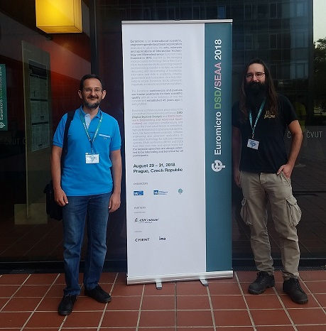
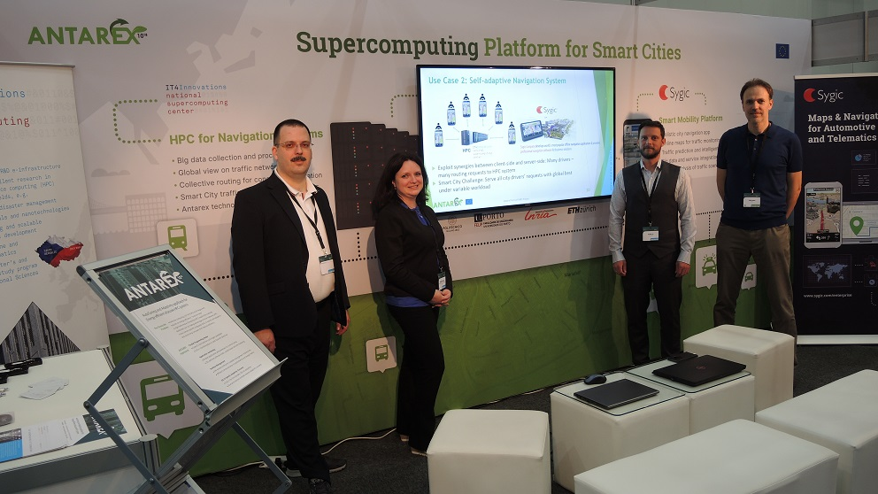

News
Euromicro PDP 2019
February 14, 2019
Giampaolo Agosta presenting ANTAREX results at PDP, in Pavia, Italy.
HiPEAC 2019
January 24, 2019
Joao Cardoso and Cristina Silvano presenting the ANTAREX poster at HiPEAC2019 in Valencia.
Sygic is one of the EC Innovation Radar finalists
December 14, 2018
Sygic, the trusted navigation solutions architect for global businesses has become one of twenty Europe’s best innovators in Innovation Radar Prize. The expert jury at the ICT 2018 conference has appreciated the solution’s positive impact on the quality of life in cities, namely its potential to reduce the time spent in the traffic by more than 20 percent and the reduction of CO2 emissions in cities.
The Collaborative Routing has been developed within the project ANTAREX, funded by the European Union. Using ANTAREX technologies, Sygic was able to optimize critical calculations and significantly improve the energy efficiency of the overall system, which was reflected in computation costs reduced by 25 percent.

Sygic’s Collaborative Routing Algorithm Has Become One of the Top European Innovations
Innovation von Sygic: Verkehrskoordinierung durch kollaborative Streckenführung (German)
L’algorithme de calcul d’itinéraire collaboratif de Sygic, une innovation européenne (French)
Innovation Radar Prize
November 3, 2018

Sygic has been selected among 50 finalists for the European Commission‘s Innovation Radar Prize 2018 with our ANTAREX UC2 output The intelligent online navigation system for citizens in the category Best early stage innovation 2018.
LINK FOR VOTING (closes on November 12, 2018)
DSD 2018
August 30, 2018
Polimi presented the ANTAREX technology portfolio and an application of the precision tuning tools at Euromicro Conference on Digital Systems Design (DSD 2018), in Prague.
TRA 2018 Video
June 2, 2018
Short video spot about ANTAREX project tools and their usage in the UC2 self-adapted navigation system prototype, which was presented last month at Transport Research Arena TRA 2018 in Vienna.
HPCAFE 2018
May 9, 2018
ANTAREX will participate to the Workshop HPCAFE-2018: High-Performance Computing Approaches for Monitoring, Exploring, Optimizing and Autotuning.
The HPCAFE Workshop will be held on Tuesday, 29 May 2018 in Ljubljana (Slovenia) co-located with the European HPC Summit Week 2018.
The HPCAFE Workshop represents a co-dissemination event of the European FET-HPC projects: AllScale, ANTAREX, EXCAPE and READEX.
EETHPC 2018
May 9, 2018
ANTAREX will participate to the Workshop EETHPC 2018: Energy Efficiency Tools for HPC.
The EETHPC Workshop will be held on Thursday, 28 June 2018, during the ISC High Performance 2018 Conference in Frankfurt, Germany.
The EETHPC Workshop is organized by the ANTAREX project, the Lawrence Livermore National Laboratory and the READEX project.
The EETHPC Workshop is supported by Energy Efficient HPC Working Group
TRA 2018
April 18, 2018
IT4Innovations and Sygic showcased the first version of the self-adaptive server-side/client-side navigation system prototype exploiting ANTAREX technologies at TRA 2018 in Vienna.
MARCONI - CINECA second most powerful supercomputer in Europe
December 6, 2017
According to the most recent TOP500 List, published in November 2017, the MARCONI Lenovo Intel Xeon Phi system
based at CINECA Supercomputing Center in Casalecchio di Reno (BO) and upgraded with 314,384 cores maintains its
number 14th position in the list with 7.47 petaflops (previous MARCONI cluster included 241,808 cores).
MARCONI became the second most powerful supercomputer in Europe after Piz Daint, a Cray XC50 system installed
at the Swiss National Supercomputing Centre (CSCS) in Lugano, Switzerland.
Piz Daint maintains its number three position in the list with 19.59 petaflops, after being upgraded
last year with NVIDIA Tesla P100 GPUs, which more than doubled its HPL performance of 9.77 petaflops.
The 2017 European HPC Handbook has been released
October 6, 2017
The publication includes the summaries of all the European HPC projects (technology and applications). ANTAREX description can be seen on pages 14-15.
Cristina Silvano presented ANTAREX research project at ScalPerf'17 Workshop
September 18, 2017
Cristina Silvano has been invited to the ScalPerf workshop to present recent research on ANTAREX project. The 15th edition of the ScalPerf’17 workshop was held in Bertinoro, Italy from September 17 to 22, 2017. The Workshop focuses on "Scalable Approaches to High Performance and High Productivity Computing". Cristina Silvano presented the work "Application autotuning for energy efficient heterogeneous HPC systems” which has been carried out in the context of the ANTAREX project and which has been previously presented at the HeteroPar'2017 Workshop.
ANTAREX research group organized ANDARE Workshop at PACT'17 Conference
September 9, 2017
Andrea Bartolini, João M. P. Cardoso and Cristina Silvano organized the ANDARE'17 Workshop on Autotuning and AutotuniNg and aDaptivity AppRoaches for Energy efficient HPC Systems. The workshop was co-located with the 26th Edition of the International COnference on Parallel Architectures and Compilation Techniques (PACT) held in Portland, USA from September 9 to 13, 2017. The ANDARE'17 program included the keynote of Keshav Pingali (University of Texas at Austin) on "Proactive control of approximate programs" and two technical sessions.
Cristina Silvano Keynote at HeteroPar'2017
August 28th, 2017
Cristina Silvano has been invited as Keynote Speaker to HeteroPar'2017, the15th International Workshop on Algorithms, Models and Tools for Parallel Computing on Heterogeneous Platforms. The workshop was co-located with the 23rd edition of EuroPar'2017, the International European Conference on Parallel and Distributed Computing held in Santiago de Compostela, Spain from August 28 to September 1, 2017. Cristina Silvano presented a work on "Application autotuning for energy efficient heterogeneous HPC systems” which has been carried out in the context of the ANTAREX research project.
{kind=link}
Cristina Silvano presented ANTAREX research project at SAMOS'17 Conference
July 16th, 2017
Cristina Silvano has been invited to the Special Session on "Energy-efficient and accelerated servers" of the SAMOS Conference to present recent research on ANTAREX project. The 17th edition of the SAMOS International Conference on Embedded Computer Systems: Architecture, Modeling and Simulation was held in Samos, Greece from July 16 to 20, 2017. Cristina Silvano presented the work on " The ANTAREX tool flow for monitoring and autotuning energy-efficient HPC systems”.
Luca Benini elevated to ACM Fellow
April 27, 2017
{kind=link}
Congratulations to Prof. Luca Benini of ETH Zurich, ANTAREX Theme Leader, who has been elevated to an ACM Fellow in 2016. The award was recognition of Luca’s contributions to the design of low power multi-processor systems.
ACM will formally recognized its 2016 Fellows at the annual Awards Banquet, to be held in San Francisco on June 24, 2017.
Cristina Silvano awarded IEEE Fellowship at DATE'17
March 28, 2017
Congratulations to Prof. Cristina Silvano of Politecnico di Milano, Scientific Project Coordinator of ANTAREX Project, who has been elevated to an IEEE Fellow in 2017. The award was recognition of Cristina’s contributions to energy-efficient computer architectures.
Cristina received the IEEE fellowship at the awards ceremony at the DATE 2017 conference in Lausanne on 28th March 2017.
{kind=link}
Tool Release - libVersioningCompiler
February 3, 2017
Polimi has released the tool libVersioningCompiler. It enables runtime compilation of source code and dynamic loading of a specified C/C++ function. It also provides support for versioning of the compiled functions.
Tool available here (GitHub).
Cristina Silvano named IEEE Fellow
November 23, 2016
The IEEE Board of Directors, at its November 2016 meeting, elevated Cristina Silvano to IEEE Fellow.
Read more here (english).
Supercomputer MARCONI ranked at number 12
November 14, 2016
CINECA's supercomputer MARCONI ranked at number 12 in the newly Top500.
Read more here (english).
Plenary Meeting
October 25-26, 2016
ANTAREX members at the Oct. 25-26, 2016, plenary meeting, in Milan, Italy.
{kind=link}
Programming and Optimizing for Performance (POP'16)
October 19, 2016
Contest organized by UPorto ANTAREX Members and by the IEEE Student Branch of FEUP (website).
{kind=link}
{kind=link}
{kind=link}
{kind=link}
Participation in Code Week@FEUP
October 13, 2016
News about ANTAREX participation in Code Week@FEUP, with a programming competition (POP'16).
{kind=link}
First Technical Review Meeting
June 23, 2016
The ANTAREX team at CINECA for the first technical review meeting.
{kind=link}
Post in Sygic Blog
June 1, 2016
POLIMI Publication
June 1, 2016
ANTAREX in webpage of Engineering Department of POLIMI.
Read more here (english).
CINECA Magazine
May 11, 2016
CINECA Magazine, ANTAREX mentioned in page 11 of Magazine #1.
Read more here (italian).
CINECA Publication
May 11, 2016
CINECA HPC report (anual), ANTAREX mentioned in page 10.
Read more here (english).
ANTAREX at HPC Summit Week
May 9, 2016
ANTAREX project will be presented in the European HPC Summit Week 2016 to be held in Prague from 9 to 12 May 2016.
The summit includes the EXDCI Workshop, the PRACEdays 2016, the EuroLab4HPC and the ETP4HPC Extreme-Scale Demonstrators Workshop.
Piece in FEUP Publication
March 21, 2016
Revista Engenharia (in portuguese) #56 Spring 2016, Faculty of Engineering of the University of Porto (FEUP)
Article in page 9 (paper version with circulation of 3,000 copies)
ANTAREX participation at Supercomputing 2015, Austin
December 5, 2015
In November 19th, ANTAREX will be present at the Bird-of-a-Feather session Taking on Exascale Challenges: Key Lessons & International Collaboration Opportunities (flyer).
Read more here.
FEUP integra projeto europeu de investigação em supercomputação
December 1, 2015
From FEUP's news section:
Com o objetivo de lidar e propor uma nova abordagem a estes desafios surge o ANTAREX um projeto de investigação europeu no qual participa uma equipa de investigação da Faculdade de Engenharia da U.Porto (FEUP). O consórcio é liderado por investigadores do Politécnico de Milão e tem um financiamento de 3 milhões de euros ancorado no programa H2020.
Read more here.
The ANTAREX project in HPC wins H2020 grant
May 19, 2015
From CINECA's news section:
The ANTAREX research project, coordinated by Cristina Silvano from Politecnico di Milano, wins a 3 million euro grant in the H2020 Future and Emerging Technologies programme on High Performance Computing.
Read more here.
The ANTAREX project in High Performance Computing wins H2020 grant
April 14, 2015
From Politecnico di Milano's news section:
The ANTAREX research project, coordinated by Cristina Silvano from Politecnico di Milano, wins a 3 million euro grant in the H2020 Future and Emerging Technologies programme on High Performance Computing.
Read more here.
Il progetto ANTAREX vince un finanziamento H2020 in High Performance Computing
April 14, 2015
From Politecnico di Milano's news section:
Il progetto di ricerca ANTAREX, coordinato da Cristina Silvano del Politecnico di Milano, vince un finanziamento di oltre 3 milioni di euro nel programma H2020 Future and Emerging Technologies.
Read more here.